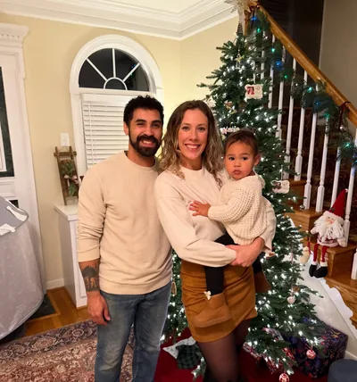

Tre Coleman — Restaurant Operations Consultant
I've spent over a decade running restaurants, building catering operations, managing food trucks—and I know what it's like when everything's on fire and you need real solutions, not consulting jargon. I help food service operators fix what's broken, build systems that actually work, and use the right tools (including AI when it makes sense) to free up time and increase profits.
Want to see where your profit is leaking?
Book a 90-minute Profit Leak Snapshot and I'll show you your top 3 leaks and what to fix first.
Book Your SnapshotWhat I do
Fix bottlenecks
Scheduling, labor control, inventory, shift execution, guest experience—tightened with simple SOPs and owner‑friendly reporting.
Add AI where it helps
Automations for daily reports, prep lists, content ops, training aids, and checklists. Human‑in‑the‑loop, guardrails on.
Train & enable
Role scorecards, micro‑training, 30‑60‑90s, and manager cadences so the standards stick without you babysitting.
How we’ll work
- Audit: Walk the floor (or virtual), pull 2–3 weeks of ops/financials, talk to the team.
- Pilot: Pick one high‑impact win (e.g., labor dashboard + scheduling guardrails) and ship inside 2–3 weeks.
- Rollout & train: SOPs, checklists, and micro‑training that are dead simple to follow.
- Review: Weekly manager cadence and a plain‑English scorecard to keep the gains.
More on how I think about this: Unreasonably Optimistic.
Principles I don’t bend
- Operator‑grade. If the frontline won’t use it on a Friday rush, it’s not done.
- 80/20 forever. We fix the 20% that moves 80% of results, then scale what works.
- Clear beats clever. One‑page SOPs > pretty decks. Screenshots, checkboxes, examples.
- Measure it. Labor %, item mix, prep accuracy, ticket time, traffic—pick the few that matter and watch them weekly.
Why I’m useful to operators
I’ve spent my career running units and leading teams in high‑volume environments—owning P&L, hiring, training, and fixing the day‑to‑day realities that decide whether a store wins or bleeds. I bring that operator lens to every engagement so your team gets practical systems, not theory.
Multi‑unit leadership
Hands‑on experience leading teams, opening lanes for managers, and driving accountability without burning people out.
Marketing that feeds ops
Grassroots + LSM that your team can actually run—calendars, activations, and offers tied to dayparts and capacity.
Training that sticks
Role scorecards, checklists, and micro‑training that reduce ramp time and make standards repeatable.
Tools I reach for
Whatever stack you’re on is fine. Typical mix includes Google Workspace, Sheets dashboards, Slack, lightweight automations (Zapier/Make), and AI assistants for checklists, training aids, and reporting—always with human review.
Where I’m based & what I’m like
Home base is Louisa, VA. I’m a hospitality‑first operator who loves clear systems, fast feedback, and steady improvement. Off the clock: weightlifting and reading.
Background
- 10+ years managing multi-unit restaurant operations
- District Manager leading multiple store locations
- $3M+ in combined revenue across multiple store locations
- Based in Louisa, Virginia, supporting operators nationwide